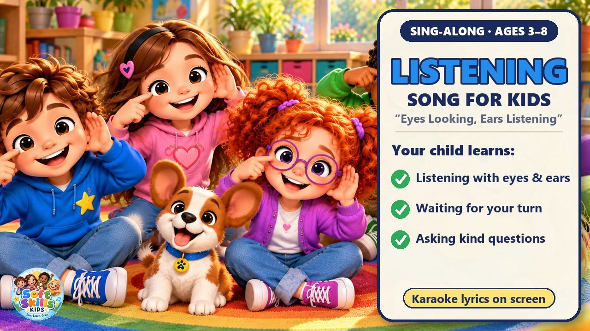
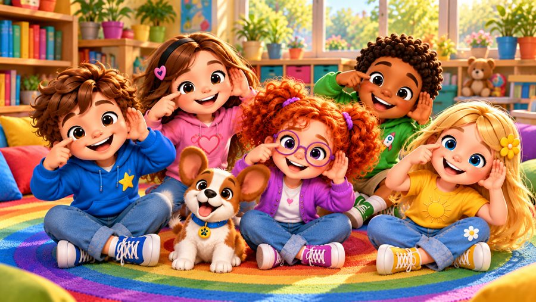
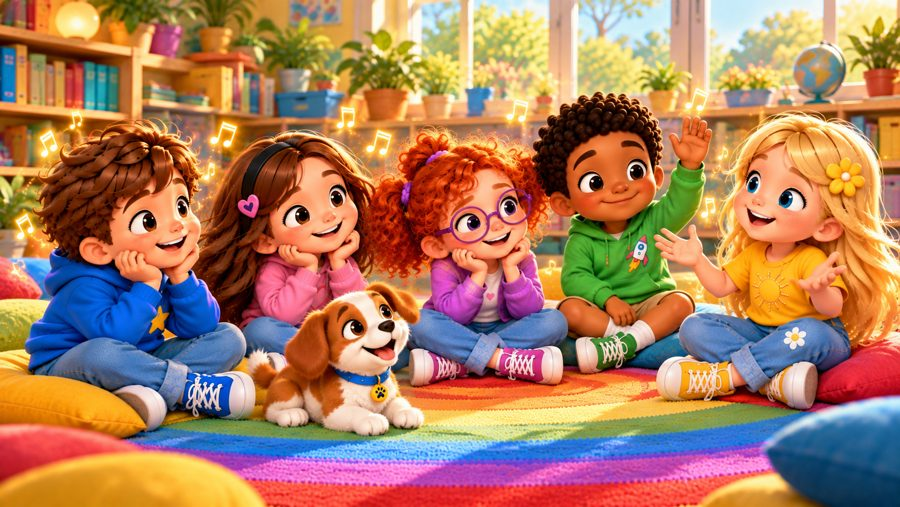
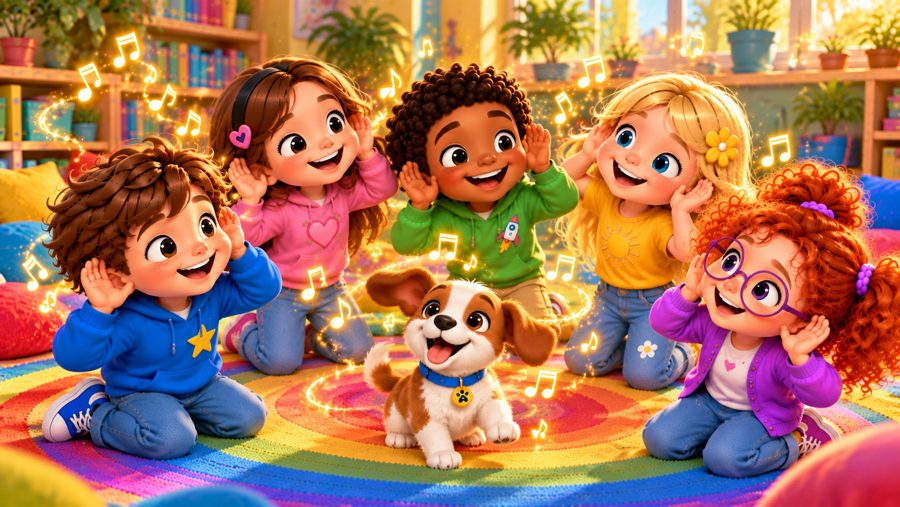
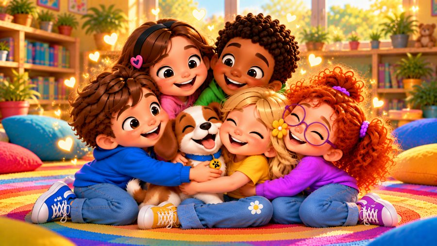
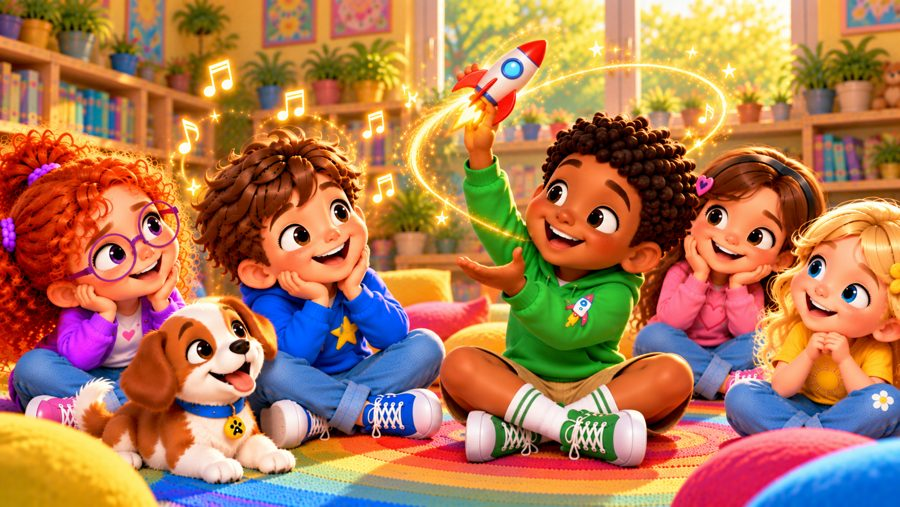
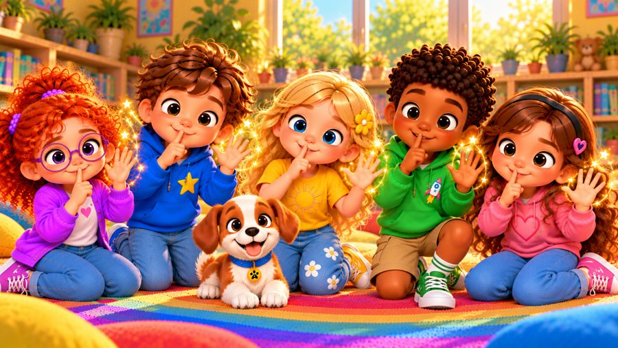

Eyes Looking, Ears Listening
A fun listening song for kids! 👂 Sing along with Max, Mia, Jay, Lily, Rosie and Buddy the puppy as they learn to be great listeners: eyes looking, ears listening, quiet mouth and open mind!
"Eyes Looking, Ears Listening" is a catchy sing-along kids song about good listening skills — paying attention, waiting for your turn, not interrupting and asking kind questions. With big karaoke lyrics and easy actions to copy, it's perfect for preschool, kindergarten and early elementary kids (ages 3–8), for circle time at school or at home.

▶💡 Why this skill matters: listening
Good listening is the foundation of learning, friendship and following instructions. Children who listen well understand more, argue less and feel more connected to others. Get down to your child’s eye level when you speak, and play listening games — like whispering a message or “Simon says”.
👨👩👧 What your child learns
- Listening with eyes and ears — giving full attention
- Waiting for your turn and not interrupting
- Asking kind questions when you don't understand
- Good listeners are kind friends
💬 Talk about it after the song
- How do you show someone you are listening?
- What can you say if you don't understand?
- How do you feel when someone really listens to you?
🏅 Quiz & Certificate
Watched the song together? Now read each question aloud — your child points to the right picture. Answer all 6 questions and your child earns a printable certificate!
🔒 The name is only used to draw the certificate on your device. We don't save or send anything.
You did it! 🎉
All 6 answers are right! Type your child's name to make the certificate.
🖨️ Free printables
Free for home and classroom use. Print on A4 or Letter paper.
🖼️ Scenes from the song






🎵 More songs


🎤 Lyrics – Eyes Looking, Ears Listening
Hey, hey!
Are you ready?
Eyes looking, ears listening!
Let's go!
When you talk, I'll listen,
I'll give you my attention,
I won't look away,
I'll listen to what you say!
I'll keep my ears wide open,
I'll wait until you're finished,
Then I'll have my turn,
That's how good listeners learn!
Stop and listen,
Take a little time,
Look at me,
And I'll look at you,
We'll understand just fine!
Listen, listen, I'm listening!
I'm listening to you!
Listen, listen, I'm listening!
I'll hear what you say and do!
Eyes looking,
Ears listening,
Quiet mouth,
And open mind!
Listen, listen, I'm listening!
Good listeners are kind!
If you tell me how you're feeling,
I'll listen without interrupting,
If I don't understand,
I'll ask you once again!
"Can you tell me what you mean?"
"Can you say it one more time?"
When we listen to each other,
We can understand just fine!
Stop and listen,
Take a little time,
Look at me,
And I'll look at you,
We'll understand just fine!
Listen, listen, I'm listening!
I'm listening to you!
Listen, listen, I'm listening!
I'll hear what you say and do!
Eyes looking,
Ears listening,
Quiet mouth,
And open mind!
Listen, listen, I'm listening!
Good listeners are kind!
Are you ready?
Eyes!
Looking!
Ears!
Listening!
Mouth!
Quiet!
Mind!
Open!
Now together!
Eyes looking!
Ears listening!
Quiet mouth!
Open mind!
Listen, listen!
I'm listening!
I'm listening to you!
Listen, listen, I'm listening!
I'm listening to you!
Listen, listen, I'm listening!
I'll hear what you say and do!
Eyes looking,
Ears listening,
Quiet mouth,
And open mind!
Listen, listen, I'm listening!
Good listeners are kind!
Listen!
Listen!
I'm listening!
Hey, hey!
You talked...
And I listened!
That's what good friends do!